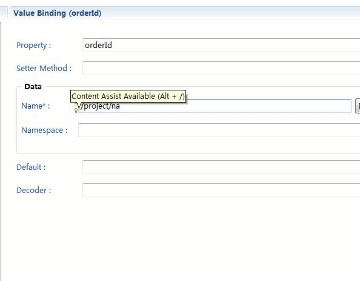
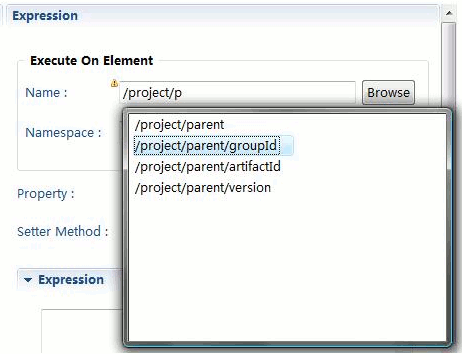
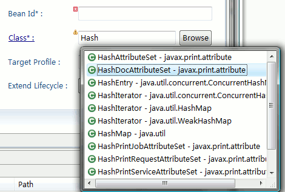
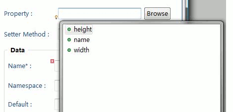
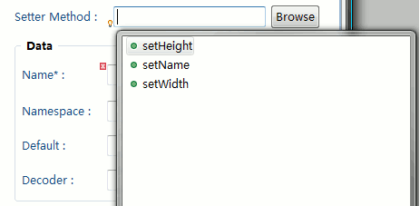
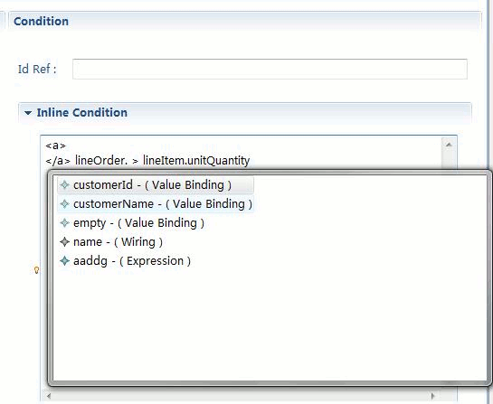
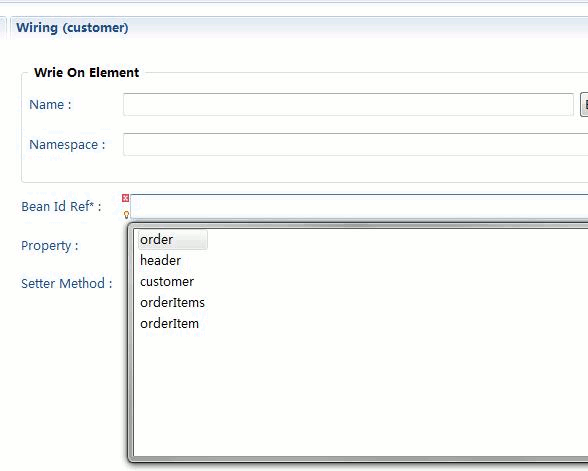

|
There are some Text control in Smooks editor provide content assist. When user active the control which supports
content assist , a small bulb will show on the left bottom.

Content assist for Selector generation.

Content assist for Java type searching.

Content assist for Properties/Setter Methods of Java bean model.


Content assist for Bindings.

Content assist for Binding ID reference.

|